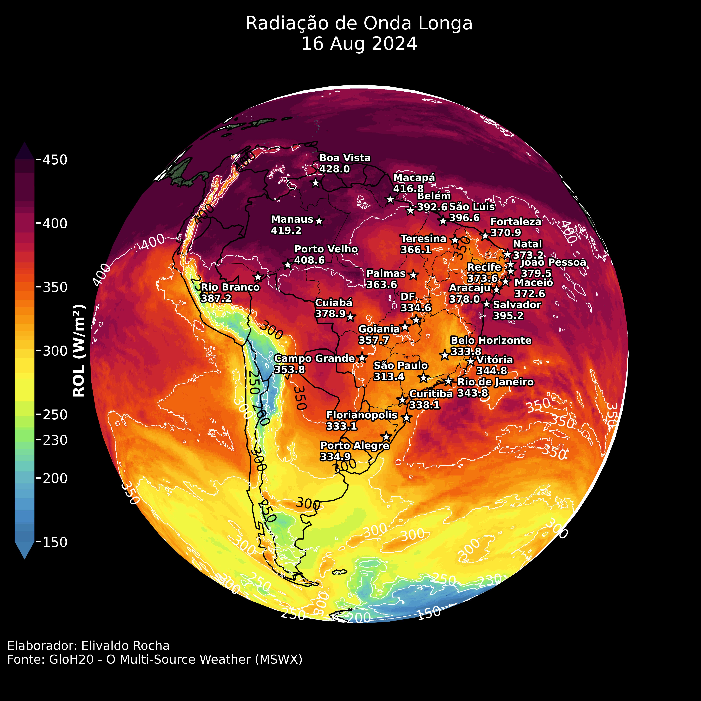
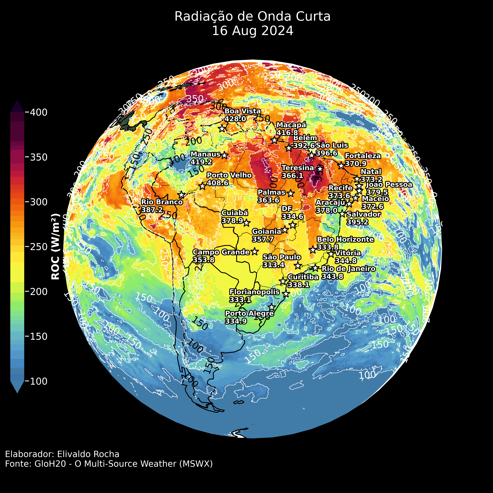
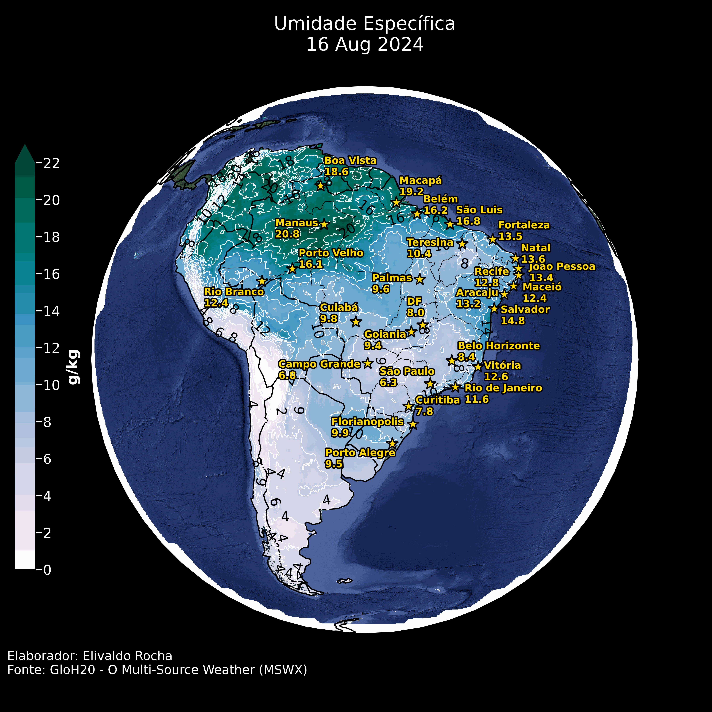

Clique nas setas ou para visualizar as previsões.
Resumo:
O dia 2 de agosto de 2024 será caracterizado por altas temperaturas e baixos índices de precipitação em grande parte do Brasil, especialmente no centro-oeste e norte do país. As condições de baixa umidade e altas pressões em algumas regiões reforçam a necessidade de atenção para potenciais riscos de incêndios florestais e problemas de saúde relacionados ao calor e à seca. Recomenda-se monitoramento contínuo das condições meteorológicas e medidas preventivas adequadas para mitigar os impactos adversos na saúde dos cidadãos e manuntenção dos ecossistemas.